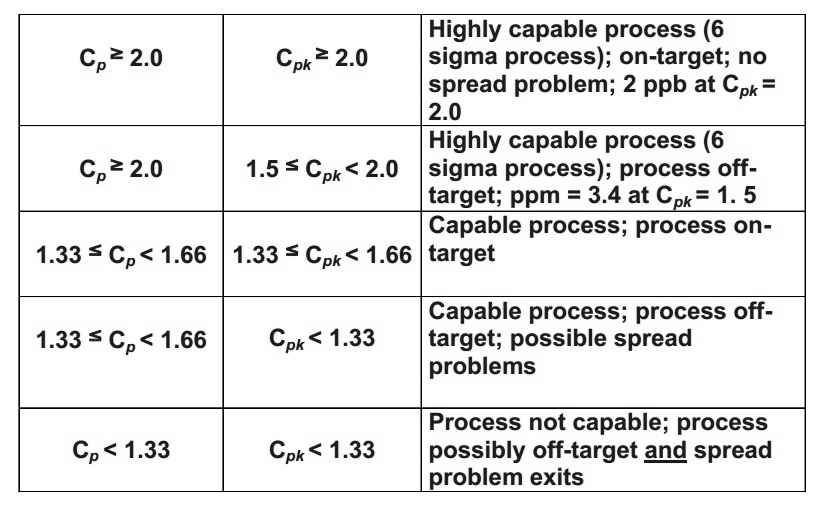

Six Sigma Methodology
Six sigma process was initially developed by Motorola in 1986, originally a tool for process improvement. It was made famous by Jack Welsh who introduced it as a key business strategy for General Electric in 1995 and it took the name of Six Sigma process.
"Six sigma is a disciplined, data-driven approach and methodology for eliminating defects (driving towards six standard deviations between the mean and the nearest specification limit) in any process - from manufacturing to transactional and from product to service" [ http://www.isixsigma.com/new-to-six-sigma/getting-started/what-six-sigma/]
In this case of a PCB fabrication company, this will lead to an increase in the manufacturability of the product, PCBs.
Definition of defect: A defect is any variation of a required characteristic of the product or its parts, which is far enough removed from its nominal value to prevent the product from fulfilling the physical and functional requirements of the customer.
There are six steps which can be implemented to put the six sigma method into practice, to improve the quality of a product, reduce the defects and increase the manufacturablity of a product, a six sigma process can be utilised. This can be broken down into six steps.
Six Steps of Six Sigma:
- Identify the product characteristics that are critical to satisfying both the physical and functional requirements of the customer and the requirements of relevant regulatory agencies.
- Determine the specific product elements that contribute to achieving these critical characteristics.
- According to product elements, determine the process step or process choice that controls each critical characteristic.
- Determine a nominal design value and the maximum (real) allowable tolerance for each critical characteristic that still guarantees successful required performance.
- Determine the capability for parts and process elements that control critical characteristics.
- If the Capability Index Cp is not ≥ 2 (Cpk ≥ 1.5), then changes the design of the product and/or process to achieve Cp ≥ 2 (or institute process control measures that will narrow process capability sufficiently to achieve Cp ≥ 2).

It shows the varition of the samples outputs and where the majority of the characteristics values lie.
In a six sigma process, it is desired for at least 99.74% of the normal
distribution to lie within the ±3σ. Hence the name of six
sigma arises as the process is within the 6 σ -where σ is the
processes standard deviation.
Through out the manufacturing process, a target value is set for a product
specification. This applies for a multi-step or single step manufacture
process, the ideal product characteristic is defined as a desired functional
output which is defined in the initial design.
During the manufacture process the target characteristic variation of
products is the mean, as seen in the figure above. All the other variation
should be within the tolerance limits. Limits which still allow for
sufficient functionality. This includes a upper spec limit (USL) and a
lower spec limit (LSL). These limits are set in the design. If the
characteristics is out with the limits, it is considered to be non-functional.
It is important to note that an unrealistic tight design tolerances, tighter than the customer requires, leads to the creation of defects.
However, there are effective methods to measure defects within the product.
- Define and categories defects.
- Illustrate that most manufacturing processes have a normal distribution - 99% of the output products are with in a range of ±3σ. Where σ is the standard deviation of the process.
- Cp and Cpk are essential measures of the product and the process design - it defines th correlation of spec and process capability(Cp).
- Cp and Cpk allow to predict the probable occurrence of random defects.
- Variable: physical, measurable product characteristic.
- Attribute: The comparison of a characteristic to a standard - judged good or bad (0 or 1). Eg. switch on or not. The standards can be set down the manufacturer or by a governing body.
- Variable characteristics are specified by designers as a nominal value (target) with a tolerance about the target (variability).
- Manufacturing processes attempt to produce everything at the target value.
- Imperfect process lead to variation in the desired characteristic.
- When depicting as a frequency histogram, this type of variation approximates a nominal distribution.
- This holds true for the majority of process characteristics.
- Standard deviation (σ) - The standard deviation is a measure of dispersion or variability which quantifies values which lie outwith the population mean (when only a sample of the population is being described, standard deviation is more properly denoted by s).

It shows the
varition target value, mean (µ) and the standard deviation (σ)
of the process.
Z-Tables which is a method used to allow the identification of the
probability that a variation will deviate from the nominal value.
This applies for any specific value (Z), the area under the curve with
a higher variation of Z is equal to the probability that a randomly
selected member of the population (X) will be equal to or greater than Z.
Z is simply defined as the number of standard deviation elements from the
mean of the normal distribution and can be defined as:
Therefore, the probability that a value (Z) will be greater than or equal to
the value can be seen in the shaeded area of fig above. A link to z tables
is: http://www.stat.ufl.edu/~athienit/Tables/Ztable.pdf
This progresses to the manufacture process capability definition:
Defined as the full range of the normal process variation observed for a given characteristic. There are tolerances in every process, which give an upper and lower limit. To be in specification, it requires to define what is out with these limits and if out of these limits, the products are defective.
Cp is a measure of how capable the process is of producing the required process characteristic, Process capability is defined as being between ±3σ, i.e. 6σ. This is not to be confused with a 6σ process.
Cp is the design margin : Cp= (USL-LSL)/6σ (where USL and LSL are upper and lower spec limits.)
However, this does not account for a shift in the mean value. The actual performance of the process - Cpk: Cpk= ((min(USL-X- ),X--USL))/3σ
Realized mean into account Cpk = Cp when the process mean is equal to nominal value. This takes into consideration the process mean not hitting the target value.
Therefore: Cpk = Cp(1-K) where K = |Nominal - process mean|/0.5(USL-LSL).
The maximization of Cp requires the joint and concurrent effort of both product and process designers. Product design has the goal of increasing the allowable tolerance to the maximum which will still permit successful function of the product. Process design has the goal of minimizing the variability of the process which reproduces the characteristic required for successful function of the product, and for centering the process on target (nominal) value of the characteristic. A high Cp index indicates that the process is capable of reproducing the characteristic. (It makes no statement about the centering of the process). A high Cpk index indicates that the process is actually reproducing the characteristic within the desired limits. (It makes no statement about the inherent capability, other than its minimum value).
A six sigma processes will have 3.4 defects per million (dependednt on the number of parts), if it has a high capability index. A very accurate process.

This allows for a to define a process which is has the ability to characterize the ability of the process, to evaluate whether the process is sufficiently meeting the requirements.
This leads on to the parameter, yield: The number of useable products
after the manufacture process.
A highly manufacturable product exhibits very high yield in the factory,
whereas a poorly manufacturable product does not.
There are a number of definition of yield as can be seen in the equations below:

The most useful yield is Rolled Yield- the number of useable products relative to the number of products processed.
And First Time Yield - What percentage of the products
manufactured are useable first time round.
It is possible to detect a defect and repair it or scrap it. The yield in
repairable and non-repairable products are:
- Process yield for repairable product is virtually 100% - one unit completed for each unit started.
- For non-repairable product, process yield may be significantly less then 100%, because of units declared unusable and scrapped.
- Rolled yield - proportion of product that goes through entire process defect-free - is essentially the same as process yield for non-repairable product.
- For repairable product, rolled yield may be significantly lower than process yield.
A more universal measurement is needed to measure the yield and is more practical, there are 2 types of distribution: Uniform distribution and random distribution. Uniform being - same defect occurs in every unit of a batch and random being - probability of failure to random units.
Measurement of defects for attribute type data is defects per unit, which can relate over a range, even if 1 in a million.

This can apply to both single and multi-step processes.
There are probability distributions which produce the probability of a
defective product or process.
Poisson's formula describes an event happening in both time and space.
This is the poisson distribution:
Poisson describes the probability distribution of an event occurring with
respect to time or space.
More formally and mathematically:

X - the number of events in a given time interval
µ - the mean event during the time interval
Poisson can be described in a defect per unit form:

This gives the probability that a value has a defect, for example,
if dpu of 1. There will be a probability of 36.78% that a product will
have a defect of some kind.
Therefore, FTY in terms of dpu is FTY = e-dpu
The probability of no defects can be given by the FTY equation.
Poission formula also predicts the probability that a product that
will have x defects in the manufacture process. Therefore, makes it possible
to calculate the distribution.
An example could be:
1000 DRAM chips are known to contain 500 defects. The dpu is 500/1000 = 0.5.
To find the defect per unit (dpu), it is important to split it into how
many DRAM chips will have x defects. This can range from 0 to 7.
Using the equation for the probability with dpu above it is possible to
calculate the probability of the percentage will have that number of defects.
eg. For a DRAM device to have 3 defects: P{3} = 0.53e-0.5/3!.
This equals 0.0126 (1.26%). Out of 1000 unit, 13 units will have 3 defects.
Therefore, 39 defects in total.
This can be carried out for each defect value, from 0 to 7 and a
distribution formed.
To calculate the first time yield, the fabrication process is tested.
the probability of it going through the entire fabrication process without
a defect is simply the joint probability of the product passing all tests
and inspections without a defect.
In a multi-step process: P{A}xP{B}xP{C} = e-axe-bxe
-c
Where a,b and c are values of dpu.
The poisson distribution for the whole process is: P{process} = e-
(a+b+c)
This is through exponentional multiplication
By adding a the dpu levels this would give a rolled yield and not dependent
on the order of the process flow.
To normalise products with different number of parts, part per million is
used: ppm/part = 1000000 x dpu/parts count
Bench marking is used to evaluate a process. The following steps are
required:
- Determine the number of opportunities for error. For product, the number of opportunities for error is considered to be the total parts count. For other than product, consider the number of elements which go into the finished work (the number of fields in a data form, number of words on a page, number of operations performed, etc.)
- Measure the total defects per unit. For product, this is measured in the factory. For other than product, a measurement equivalent to total defects per unit is needed. This may be derived from: First-time yield (FTY) or dpu = -ln (FTY)
- Calculate ppm per part. Ppm/part = 1000000 x dpu / parts count
- Estimate process capability. Determine sigma using chart
- cGMP - This mainly extends to food
- FMEA - This is covered in greater detail here
- RCA - Root cause analysis is a method of problem solving that tries to identify the root causes of faults or problems. A root cause is a cause that once removed from the problem fault sequence, prevents the final undesirable event from recurring. - More detail here
- An unordered list
- An unordered list
- An unordered list
- An ordered list
- An ordered list
- An ordered list
- A definition list - and this is the dt
- A definition list - and this is the dd, A definition list - and this is the dd, A definition list - and this is the dd, A definition list - and this is the dd, A definition list - and this is the dd,
- A definition list - and this is the dt
- A definition list - and this is the dd, A definition list - and this is the dd, A definition list - and this is the dd, A definition list - and this is the dd, A definition list - and this is the dd,
The increase in the capability of a process by optimising the steps above. Results in the FTY, which has an output of one of these:

It can be seen that a highly capable process results in a much higher FTY,
also extending to a high complexity.
Also a highly capable process (Cp = 2.0) there is a very high
yield for products up to 17000 parts but quickly declines after.
Therefore, this is the process which is sought after.
Here is a comparison of a 6σ and a 4σ process:

A much larger output is possible from this process, as the limits are further from the target mean. Also, if a shift in the target value occurs; a process which lies within spec, can contian defects:

This is a 4σ process, if this is compared to a 6σ process, the shift in target value due to an external effect, does not cause the process to be out of spec.

This is a far superior process and the time and money invested in the possibility of this process results in a much more cost effective manufacture procedure with a higher yield.
Relationship between Reliability and Quality
"Engineering reliability typically refers to the probability that a system, or any of its components, will perform a required function for a stated period of time and under specified operating conditions. As such, reliability is inextricably linked with time-dependent quality concepts, such as maintaining a state of control and predicting the chances of losses from failures for quality risk management. Two popular current good manufacturing practice (cGMP) and quality risk management tools, failure mode and effects analysis (FMEA) and root cause analysis (RCA) are examples of engineering reliability evaluations that link reliability with quality and risk. Current concepts in pharmaceutical quality and quality management systems call for more predictive systems for maintaining quality; yet, the current pharmaceutical manufacturing literature and guidelines are curiously silent on engineering quality. This commentary discusses the meaning of engineering reliability while linking the concept to quality systems and quality risk management. The essay also discusses the difference between engineering reliability and statistical (assay) reliability." - [http://journal.pda.org/content/66/6/512.abstract]The improved reliability of a product, commonly links to the customers perception of 'quaility', the more it performs the desired output the closer it is to the described product sold to the customer.
Reliabilty extends past the output of the products and can cover the manufacturing process and the materials used.
The consistancy of a manufacturing process is important not cause much variability between products. The reliabilty of the process and the checks in the production line will ultimately result in a relable product.
The reliabilty of consistant materials will also lead to little variability in the products. Whether the material is out sourced, which include a relaible procurement, or from an interal source. The less defects the material has, the more reliable it is and the smaller defects between products. Hence, the better quality as expressed above.
There are practices which can be carried out to ensure quality:
A paragraph of text with class="highlight", A paragraph of text with class="highlight", A paragraph of text with class="highlight", A paragraph of text with class="highlight", A paragraph of text with class="highlight",
A paragraph of text with class="subdued", A paragraph of text with class="subdued", A paragraph of text with class="subdued", A paragraph of text with class="subdued", A paragraph of text with class="subdued",
A paragraph of text with class="error", A paragraph of text with class="error", A paragraph of text with class="error", A paragraph of text with class="error", A paragraph of text with class="error",
A paragraph of text with class="success", A paragraph of text with class="success", A paragraph of text with class="success", A paragraph of text with class="success", A paragraph of text with class="success",
A paragraph of text with class="caption", A paragraph of text with class="caption", A paragraph of text with class="caption", A paragraph of text with class="caption", A paragraph of text with class="caption",
A paragraph of text with the text with <small> tags, A paragraph of text with the text with <small> tags, A paragraph of text with the text with <small> tags, A paragraph of text with the text with <small> tags, A paragraph of text with the text with <small> tags,
A paragraph of text with the text with <em> tags, A paragraph of text with the text with
A paragraph of text with the text with <strong> tags, A paragraph of text with the text with <strong> tags, A paragraph of text with the text with <strong> tags, A paragraph of text with the text with <strong> tags, A paragraph of text with the text with <strong> tags,
A h3 level heading inside a "featurebox" div
A normal paragraph of text within a div with a class="featurebox", A normal paragraph of text within a div with a class="featurebox", A normal paragraph of text within a div with a class="featurebox", A normal paragraph of text within a div with a class="featurebox", A normal paragraph of text within a div with a class="featurebox", A normal paragraph of text within a div with a class="featurebox" More about: A h3 level heading inside a featurebox div
A h3 level heading inside a "featurebox2" div
A normal paragraph of text within a div with a class="featurebox2", A normal paragraph of text within a div with a class="featurebox2", A normal paragraph of text within a div with a class="featurebox2", A normal paragraph of text within a div with a class="featurebox2", A normal paragraph of text within a div with a class="featurebox2", A normal paragraph of text within a div with a class="featurebox2" More about: A h3 level heading inside a featurebox2 div
A normal paragraph of text, A normal paragraph of text, A normal paragraph of text, A normal paragraph of text, A normal paragraph of text, A normal paragraph of text, A normal paragraph of text, A normal paragraph of text, A normal paragraph of text,
| Table Heading | ||
|---|---|---|
| Col 1 | Col 2 | Col 3 |
| Sub head 1 | 209385 | 45 |
| Sub head 2 | 4577 | 22 |
| Sub head 3 | 69765 | 75 |